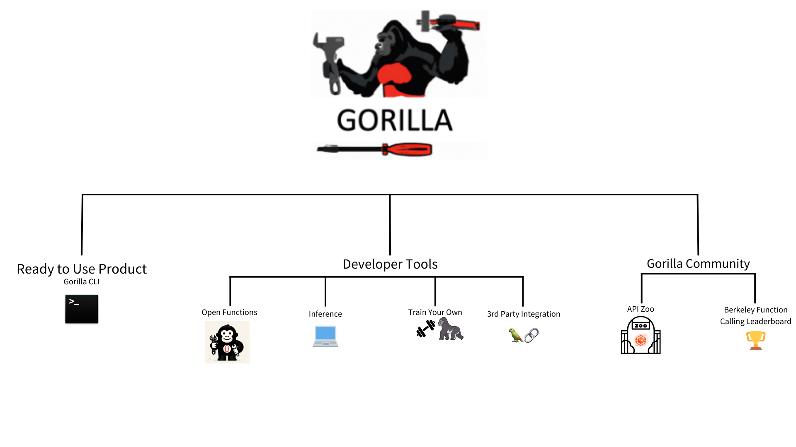
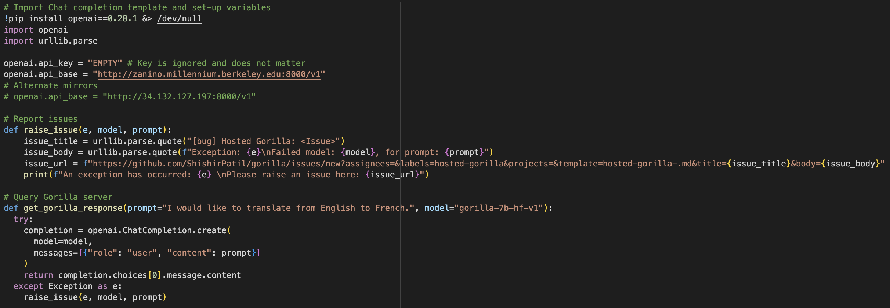

🦍 Gorilla: Large Language Model Connected with Massive APIs
Blog 5: How to Use Gorilla
How to Use Gorilla: A Step-by-Step Walkthrough
Gorilla returns the right API calls for your specific task, enabling LLMs to interact with the world. In this blog post, learn about the different ways you can use Gorilla directly, or integrate it into your workflow.
Gorilla LLM is a rapidly growing open-source project that connects LLMs to APIs, accurately returning API calls for a specific task provided by the user in natural language. Imagine ChatGPT with the ability to generate accurate CLI commands, set up meetings on Google Calendar, and order a pizza for you. These are all online tasks that can be accomplished through API calls, and Gorilla automatically generates relevant calls given a task. With this functionality, Gorilla effectively has the ability to take actions in the world by interacting with thousands of services and tools to accomplish a wide variety of user-defined tasks. Gorilla usage falls into 3 primary categories:
- Ready-to-Use Product: Gorilla CLI
- Developer Building Blocks:
- Gorilla Community:
- Gorilla CLI: Gorilla in Your
Command Line 💻
Gorilla powered CLI. Get started with
pip install gorilla-cli.Gorilla CLI simplifies command line interactions by generating candidate commands for your desired task. Instead of needing to recall verbose commands for various API's, Gorilla CLI streamlines this process into a simple command:
gorilla “your query”. Moreover, we prioritize confidentiality and full user control, only executing commands with explicit permission from the user and never collecting output data.- Get started with pip install:
pip install gorilla-cli - Using gorilla CLI to write to files:
- Command:
$ gorilla “generate 100 random characters into a file called text.txt” - Output: Using arrow keys, toggle between commands and press Enter
» cat /dev/urandom | env LC_ALL=C tr -dc 'a-zA-Z0-9' | head -c 100 > test.txt
echo $(head /dev/urandom | LC_CTYPE=C tr -dc 'a-zA-Z0-9' | dd bs=100 count=1) > test.txt
dd if=/dev/urandom bs=1 count=100 of=test.txt
- Command:
- Other Usage Examples:
- Command:
$ gorilla “list all my GCP instances” - Output:
» gcloud compute instances list --format="table(name,zone,status)"
gcloud compute instances list --format table
gcloud compute instances list --format="table(name, zone, machineType, status)"
- Command:
- Get started with pip install:
- Gorilla Inference
🦍
Note: If you would like to try out zero-shot Gorilla in a playground-like environment check out this Google Colab.
It is plug-and-play with OpenAI's chat completion API: Gorilla powered CLI. Our hosted Gorilla models are compliant with OpenAI's chat completion API, and can be used as a drop-in replacement! You just need to point
openai.api_baseto our endpoints, and pick the rightmodel.
Some of our Gorilla models, were trained on data from HuggingFace's Model Hub, Pytorch Hub, and TensorFlow Hub. Out of the box, it returns API calls for your specific prompt based on its training data (and we've now introduced a way to finetune Gorilla on your own set of APIs but more on that in later sections 😊). Running inference with gorilla is now supported on both hosted endpoints and locally! Inference with Gorilla can be done in 3 primary modalities:- CLI inference for Single and Batched Prompt Inference. (Not to be confused with Gorilla-CLI, the tool).
- Local Inference with Quantized Models
- Inference with Hosted Endpoint on Replicate
CLI Inference: Install dependencies, download model, prompt!
conda create -n gorilla python=3.10conda activate gorillapip install -r requirements.txt
At this point you have multiple options as to which Gorilla Model you would like to use. In order to comply with the Llama license, we have released the Gorilla delta weights, which need to be merged with Llama. If you would like to use models out of the box, you can directly download gorilla-mpt-7b-hf-v0 and gorilla-falcon-7b-hf-v0 from Hugging Face. Run the model with:python3 serve/gorilla_falcon_cli.py --model-path path/to/gorilla-falcon-7b-hf-v0
To run inference with batched prompts (multiple prompts in one batch), create a json file following this format with all of your prompts. Get results for your set of prompts by running:python3 gorilla_eval.py --model-path path/to/gorilla-falcon-7b-hf-v0 --question-file path/to/questions.jsonl ----answer-file path/to/answers.jsonlLocal Inference With Quantized Models
To support running Gorilla locally, we have released quantized versions of the llama, falcon, and mpt-based versions of Gorilla. The easiest way to run Gorilla locally with a clean UI is through text-generation-webui.
- Clone text-generation-webui:
git clone https://github.com/oobabooga/text-generation-webui.git - Go to cloned folder and install dependencies:
cd text-generation-webuipip install -r requirements.txt -
Run the following command to start the UI:
./start_macos.sh -
Open a browser and paste the following url:
http://127.0.0.1:7860/
From here, navigate to the “Model” tab, select your desired quantized model by pasting the name from this Hugging Face repo. For example in the first text field under “Model,” one could paste “gorilla-llm/gorilla-7b-hf-v1-gguf” and then specify the specific model as “gorilla-7b-hf-v1-q3_K_M.gguf.” After loading the model, navigate to the “Chat” tab and start prompting!
If you want to see an in depth walk through of how quantization with llama.cpp is performed under the hood, check out this Google Colab.Inference with Hosted Endpoint on Replicate
Rather than hitting our UC Berkeley hosted endpoint, for those wanting to run fast, private, and secure inference, Replicate is an alternative scalable platform to run and deploy ML models. Useful for private applications, and running Gorilla for personal use-cases, Gorilla can now be turned into a production-grade service following the instructions below!
- Install Cog (Replicate's tool to containerize/deploy Gorilla):
sudo curl -o /usr/local/bin/cog -L https://github.com/replicate/cog/releases/latest/download/cog_`uname -s`_`uname -m`sudo chmod +x /usr/local/bin/cog - Utilize the config file here to use Gorilla with Cog
- Set up predict.py according to this specification
- Run the following command to build a Docker image:
cog build -t your_image_name_here - Log in to Replicate and push your model to Replicate's registry:
cog logincog push r8.im/your_username_here/your_model_name_here - The Gorilla model should now be visible on Replicate's website. To run inference,
install Replicate's python client library, authenticate your API token, and start
generating outputs!
pip install replicateexport REPLICATE_API_TOKEN=your_token_hereoutput = replicate.run("your_username_here/your_model_name_here:model_version_here", input={"user_query": your_query_here})
- Gorilla OpenFunctions: Executable API Calls ⚔️
NEW: We've now released Gorilla Open Functions v2! Checkout this blog post
for an in-depth analysis on the capabilities of the latest iteration of Gorilla Open
Functions!
To quickly test out the newest Open Functions model, you can interactively use this demo!
Gorilla Open Functions returns executable API calls given a specific user query and API documentation. It acts as an open source version of OpenAI's function calling except with chat completion. One key difference is that OpenAI will repeatedly prompt users if arguments are missing in the query but Gorilla Open Functions utilizes chat completion to accurately infer and fill in these missing parameters. Open Functions v2 boasts the best functional calling performance amongst all open source models and is on par with GPT-4! v2 introduces 5 new features including support for more argument data types across different languages, parallel and multiple function calling, function relevance detection, and an improved ability to format RESTful API calls.
Using the latest Gorilla Open Functions is simple: Install the necessary dependencies, provide a query and a set of functions, and get a response.
- Install dependencies:
pip install openai==0.28.1 - Provide a query and set of functions (example below):
query = "Call me an Uber ride type \"Plus\" in Berkeley at zip code 94704 in 10 minutes" function_documentation = { "name": "Uber Carpool", "api_name": "uber.ride", "description": "Find suitable ride for customers given the location, type of ride, and the amount of time the customer is willing to wait as parameters", "parameters": [ { "name": "loc", "description": "location of the starting place of the uber ride" }, { "name":"type", "enum": ["plus", "comfort", "black"], "description": "types of uber ride user is ordering" }, { "name": "time", "description": "the amount of time in minutes the customer is willing to wait" } ] } - Define a response function (example below):
def get_gorilla_response(prompt="Call me an Uber ride type \"Plus\" in Berkeley at zip code 94704 in 10 minutes", model="gorilla-openfunctions-v2", functions=[]): openai.api_key = "EMPTY" openai.api_base = "http://luigi.millennium.berkeley.edu:8000/v1" try: completion = openai.ChatCompletion.create( model="gorilla-openfunctions-v1", temperature=0.0, messages=[{"role": "user", "content": prompt}], functions=functions, ) return completion.choices[0].message.content except Exception as e: print(e, model, prompt) - Return relevant API call:
get_gorilla_response(query, functions=functions) - Output Example:
uber.ride(loc="berkeley", type="plus", time=10)
Also, checkout the following tutorials for running and self hosting OpenFunctions locally! Rather than relying on our UC Berkeley hosted endpoints, the tutorials below go over local
- Run
OpenFunctions Locally!
The link above provides a walkthrough of the quantization process of the Gorilla OpenFunctions model and demonstrates how you can run fast, local inference with the model on Google Colab's free T4 GPU! - Self-Hosting
OpenFunctions
The link above provides a clear walkthrough on how to set up serving Gorilla OpenFunctions for your enterprise use-cases. Self-hosting the model in this manner allows for control over your sensitive enterprise data, resulting in secure, private inference!
- Install dependencies:
- Integrating Gorilla with Third Party Libraries 🦜
For a self contained walkthrough on how to integrate Gorilla with Langchain check out this
Google Colab.
Integrate Gorilla with Langchain for easy deployment in less than 10 lines of code. Install dependencies, create a langchain agent and start prompting!
- Install dependencies:
pip install transformers[sentencepiece] datasets langchain_openai &> /dev/null - Define Langchain Chat Agent:
from langchain_openai import ChatOpenAI chat_model = ChatOpenAI( openai_api_base="http://zanino.millennium.berkeley.edu:8000/v1", openai_api_key="EMPTY", model="gorilla-7b-hf-v1", verbose=True ) - Prompt:
example = chat_model.invoke("I want to translate from English to Chinese")print(example.content)
- Install dependencies:
- Train Your Own Gorilla 🔨🔧
Want to use Gorilla on your own set of APIs? Whether it's utilizing Gorilla to help your company run more efficiently by training it on internal APIs or playing around with personal applications built on top of Gorilla, its now easy to train your own Gorilla LLM! We currently have two ways finetune Gorilla:
- text-generation-webui: With this method of finetuning, its possible to train full-precision versions of Gorilla (llama, falcon, and mpt base) on your data with a clean chat interface to interact with your model. However, for quantized models, this method does not support .gguf file formats, which is the file format for the official k-quantized gorilla models. As a result, if you would like to finetune quantized models with this method, we will be using GPTQ quantized gorilla from TheBloke.
- Llama.cpp built-in finetuning: This method allows you to finetune Gorilla on our official a href="https://huggingface.co/gorilla-llm/gorilla-7b-hf-v1-gguf/tree/main">llama-based k-quantized models. Unfortunately this method doesn't support finetuning the falcon-based or mpt-based quantized versions of Gorilla. The steps are straightforward, but we are working to make the pipeline for this process self-contained and more streamlined so stay-tuned for that!
- Finetuning with text-generation-webui:
git clone https://github.com/oobabooga/text-generation-webui.git- Follow text-generation
webui to run the application locally
- Go to cloned folder
cd loras- Format your APIs according to this
template and upload your desired API's (stored as a .txt file)
into the
lorasdirectory pip install -r requirements.txt./start_macos.shand it will open a localhost interface
- Open a browser and go to url
http://127.0.0.1:7860/ - Navigate to the "Model" tab
- Load this GPTQ
quantized version of Gorilla>.
Note that text-generation-webui method DOES NOT support .gguf models for LoRA
finetuning, which is why we use GPTQ quantized version.
- If you would like to finetune the full precision models, you can pick any of the models WITHOUT the gguf or ggml suffix tag in this Hugging Face Repo.
- To use the llama-based model, we released delta weights to follow compliance rules, so first follow these instructions to merge with base llama.
- In the dropdown menu under the Models tab, click the LoRA dropdown menu to add your LoRA.
- Click "Apply Lora" Note that this step might take some time.
- Navigate to the Chat tab and start chatting with your fine-tuned model!
- If you would like to speed up inference and have a GPU available on your
laptop, increasing
n-gpu-layerson the left side of the "Model" tab accelerates inference.
- If you would like to speed up inference and have a GPU available on your
laptop, increasing
- Finetuning with Llama.cpp:
To finetune llama-based quantized models, we can directly utilize finetuning functionality in llama.cpp in accordance with the steps below:- Format your APIs according to this template and store as a .txt file
- Download your desired k-quantized model from here to use as the base model (note only llama based models are supported). Make sure you are installing a quantized model (.gguf file format).
- Run
llama.cpp/finetune --model-base the-model-you-downloaded.gguf --train-data your-training-data.txt- Refer to llama.cpp documentation for any extra flags you would like to include.
- Run the following command for inference:
llama.cpp/main --model the-model-you-downloaded.gguf --lora ggml-lora-LATEST-f32.gguf --prompt "YOUR_PROMPT_HERE"
- Gorilla API Zoo Index 📖
The API Zoo is an open sourced index containing API documentation that can be used by LLMs to increase tool-use capabilities via API calls. Anyone can upload to the index, simply follow the instructions here to upload your API!
- Berkeley Function Calling
Leaderboard 🏆
The Gorilla Team has now released the Berkeley Function Calling Leaderboard (BFCL)! This is the first comprehensive dataset for evaluating executable function calls across different languages for LLM function calls. The dataset considers function callings of various forms, different function calling scenarios, and the executability of function call. Specifically, BFCL includes evaluating across Python, Java, JavaScript, REST APIs, and SQL across a wide variety of real-world function calling scenarios. OpenFunctions v2 currently boasts the best performance amongst all open-source models and is on-par with GPT-4! For an interactive visualization to see how different models perform on this data set, checkout the leaderboard here!
 Detailed analysis using Berkeley Function-Calling
Leaderboard (BFCL) Wagon Chart
Detailed analysis using Berkeley Function-Calling
Leaderboard (BFCL) Wagon Chart
Summary
This blog post went over the numerous methods to utilize and experiment with Gorilla for your own use cases including running local inference, finetuning Gorilla on your own set of APIs, utilizing Gorilla OpenFunctions, the API Zoo. Gorilla enables some super cool applications like Gorilla-Spotlight! Enabling LLMs to utilize tools like APIs opens up the door for agents that can concretely interact with the world. The possibilities for applications are endless. Be sure to check out our Discord community for updates and any questions as well as our official repo on Github.